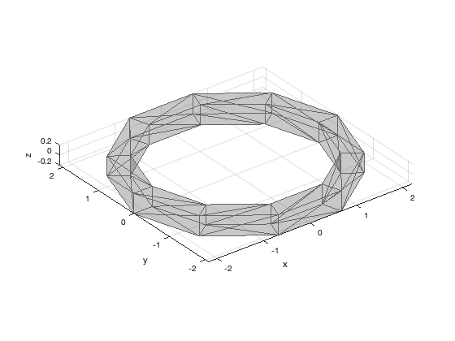

SQUAREHOOP Vertices and faces for a square hoop about the z-axis
If there are no outputs it will draw the hoop in a new figure.
Contents
Form:
[v, f] = SquareHoop(w,r,n)
Inputs
w (1,1) Width of hoop segment r (1,1) Radius n (1,1) Number of divisions
Outputs
v (:,3) Vertices f (:,3) Faces
SquareHoop>AddFaces
Copyright
Copyright (c) 2019 Princeton Satellite Systems, Inc. All rights reserved.